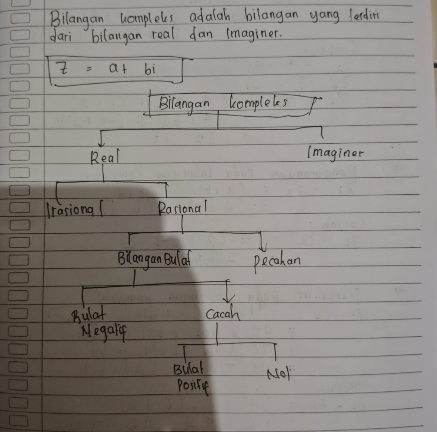
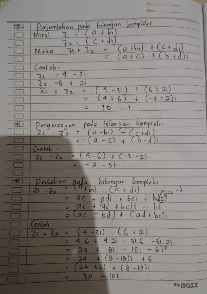
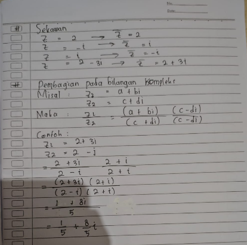

1. Definisi Bilangan Kompleks
Bilangan kompleks merupakan himpunan bilangan terbesar (\(\mathbb{C}\)) yang dibentuk untuk memperluas himpunan bilangan real (\(\mathbb{R}\)) sehingga persamaan polinomial seperti \(x^2 + 1 = 0\) memiliki solusi.
dimana:
- \(a = \text{Re}(z) \in \mathbb{R}\) adalah Bagian Real (*Real part*).
- \(b = \text{Im}(z) \in \mathbb{R}\) adalah Bagian Imajiner (*Imaginary part*).
- \(i\) adalah Satuan Imajiner (*imaginary unit*) dengan sifat fundamental: \(i = \sqrt{-1} \iff i^2 = -1\)
2. Struktur & Hirarki Sistem Bilangan
Berikut adalah bagan hierarki klasifikasi sistem bilangan sesuai lembar catatan perkuliahan (Lembar 1):
(\(\sqrt{2}, \pi, e\))
(\(\frac{p}{q}, q \neq 0\))
(\(-1, -2, \dots\))
(\(0, 1, 2, \dots\))
(\(1, 2, 3, \dots\))
(\(0\))
(misal: \(2i, 3+4i\))
Tabel Rangkuman Klasifikasi Bilangan
| Himpunan Bilangan | Notasi | Syarat & Bentuk Aljabar | Contoh |
|---|---|---|---|
| Bilangan Kompleks | \(\mathbb{C}\) | \(z = a + bi\) dengan \(a, b \in \mathbb{R}\) dan \(i = \sqrt{-1}\) | \(4 - 3i, 2 + i, 5, 2i\) |
| Bilangan Real | \(\mathbb{R}\) | Bagian imajiner nol (\(b = 0 \implies z = a\)) | \(-5, 0, \frac{3}{4}, \sqrt{2}, \pi\) |
| Bilangan Imajiner | \(\mathbb{I}\) | Bagian imajiner tidak nol (\(b \neq 0\)) | \(2i, -3i, 4+2i\) |
| Bilangan Rasional | \(\mathbb{Q}\) | Dapat dinyatakan dalam bentuk pecahan \(\frac{p}{q}\) (\(q \neq 0, p, q \in \mathbb{Z}\)) | \(\frac{1}{2}, -\frac{3}{5}, 4, 0{,}333\dots\) |
| Bilangan Irasional | \(\mathbb{R} \setminus \mathbb{Q}\) | Tidak dapat dibentuk \(\frac{p}{q}\) (desimal tak terhingga tak berulang) | \(\sqrt{2}, \sqrt{3}, \pi, e\) |
| Bilangan Bulat | \(\mathbb{Z}\) | Himpunan bilangan bulat negatif, nol, dan positif | \(\{\dots, -2, -1, 0, 1, 2, \dots\}\) |
| Bilangan Asli (Positif) | \(\mathbb{N}\) | Bilangan bulat mulai dari satu ke atas | \(\{1, 2, 3, 4, \dots\}\) |
3. Operasi Aljabar pada Bilangan Kompleks
Misalkan diberikan dua bilangan kompleks: \[ z_1 = a + bi \quad \text{dan} \quad z_2 = c + di \]
A. Penjumlahan Bilangan Kompleks
Diketahui \(z_1 = 4 - 3i\) dan \(z_2 = 6 + 2i\). Tentukan \(z_1 + z_2\)!
B. Pengurangan Bilangan Kompleks
Diketahui \(z_1 = 4 - 3i\) dan \(z_2 = 6 + 2i\). Tentukan \(z_1 - z_2\)!
C. Perkalian Bilangan Kompleks
Diketahui \(z_1 = 4 - 3i\) dan \(z_2 = 6 + 2i\). Tentukan \(z_1 \cdot z_2\)!
4. Bilangan Kompleks Sekawan (Konjugat)
Konjugat kompleks dari bilangan \(z = a + bi\) dinotasikan dengan \(\bar{z}\) (*z bar*), yang diperoleh dengan menegasikan bagian imajinernya:
| Bilangan Kompleks (\(z\)) | Konjugat Sekawan (\(\bar{z}\)) | Keterangan Analisis |
|---|---|---|
| \(z = 2\) | \(\bar{z} = 2\) | Bilangan real murni (\(b = 0\)), nilai konjugat tetap sama. |
| \(z = -i\) | \(\bar{z} = i\) | Imajiner murni (\(a = 0, b = -1\)), tanda berbalik menjadi positif. |
| \(z = i\) | \(\bar{z} = -i\) | Imajiner murni (\(a = 0, b = 1\)), tanda berbalik menjadi negatif. |
| \(z = 2 - 3i\) | \(\bar{z} = 2 + 3i\) | Bagian imajiner \(-3i\) dinegasikan menjadi \(+3i\). |
Perkalian sebuah bilangan kompleks dengan sekawannya selalu menghasilkan bilangan real tak-negatif:
5. Pembagian Bilangan Kompleks
Operasi pembagian \(\frac{z_1}{z_2}\) (dengan \(z_2 \neq 0\)) dilakukan dengan merasionalkan penyebut, yaitu mengalikan pembilang dan penyebut dengan sekawan dari \(z_2\):
Diketahui \(z_1 = 2 + 3i\) dan \(z_2 = 2 - i\). Hitunglah \(\frac{z_1}{z_2}\)!
6. Dokumentasi Catatan Tulis Tangan Asli
Berikut adalah arsip digital lembar catatan kuliah yang diambil langsung selama sesi perkuliahan:


